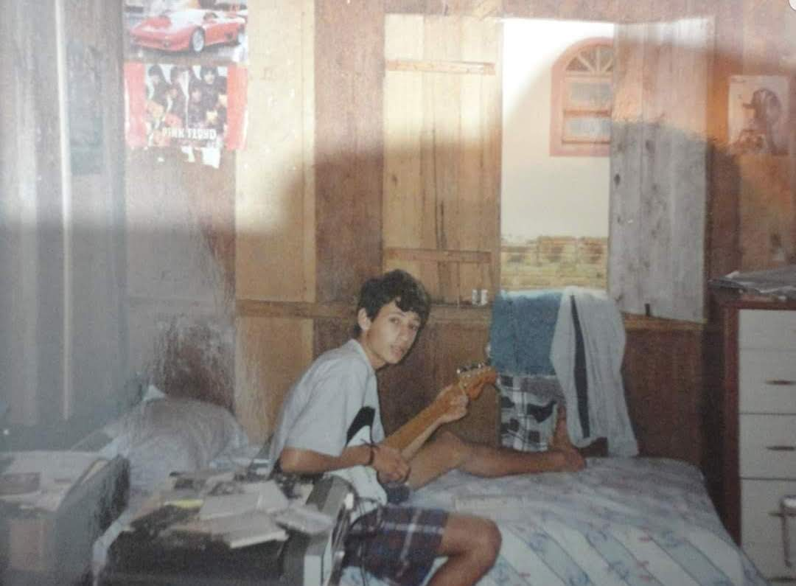

Minha História
Sou Rodrigo Fa, músico, guitarrista, violonista, compositor e escritor de Palhoça.
Comecei a tocar aos 8 anos de idade, em 1988, incentivado pelos meus pais. Tive aulas de violão com a professora Rosana, que, com muita sabedoria, me passou os fundamentos iniciais. Segui estudando e buscando orientação com outros professores ao longo dos anos.
No colégio, tive minha primeira banda, formada por alunos para um festival de música. Não nos classificamos, mas apresentamos uma música de minha autoria. Desde cedo, sempre gostei de escrever e compor. Também me apresentei em eventos escolares, como o Dia das Crianças, Dia dos Professores e Dia da Árvore – este último com uma música de minha autoria, cantada ao vivo na Rádio São Francisco.
A Trajetória nas Bandas
Minha primeira banda profissional foi a Servos do Aririu da Formiga, em 1998, como guitarrista solo. Tocamos em alguns festivais de música em Santo Amaro da Imperatriz. Em um deles, apresentamos minha música "Será que eles vão voltar" e ficamos em 4º lugar. A banda tocava covers do Nirvana, mas sempre valorizava também músicas autorais.
A Era Combat: Do Lançamento ao Planeta Atlântida
Em 1999, fui convidado a integrar a banda Combat pelo meu amigo e um dos fundadores, Inaldo Belarmino. Na época, era a banda mais conhecida de Palhoça. Meu primo, Sandro Cabeça, também participou da formação original como baterista. A banda havia gravado seu primeiro disco de estúdio (Rei da Gíria) e precisava de um guitarrista para o lançamento. Entrei e permaneço até hoje.
Com a Combat, tocamos nas principais casas da Grande Florianópolis e em diversas cidades de Santa Catarina. Em 2001, abrimos o festival "Planeta Atlântida", em Florianópolis, o que abriu portas para participarmos de diversos shows nacionais e internacionais, ao lado de nomes como Acústicos & Valvulados, O Rappa, Charlie Brown Jr., Raimundos, Banda Catedral, O Surto, Nenhum de Nós, Sepultura, entre outros.
Em 2004, gravamos nosso segundo álbum, "Da Nossa Laia", no estúdio Flat, em Palhoça. Em 2006, fomos a São Paulo gravar um single nos estúdios Mosh, com produção de Wanderlei Guarino, participação do rapper Jonny MC (ex-Heppen Hood) e do percussionista Chico Brown, filho de Carlinhos Brown.

Novos Horizontes: De Vox Populi a Theatro dos Bonecos
Em 2007, com a pausa da banda Combat, entrei para o mercado de música baile, integrando a banda Vox Populi.
Em 2009, o artista plástico Wando Cunha me convidou para integrar a banda Theatro dos Bonecos, que também trabalha com músicas autorais e tem uma proposta artística que envolve música, magia, arte e poesia, voltada para apresentações teatrais. Com o Theatro dos Bonecos, do qual ainda faço parte, tocamos em praticamente todos os teatros de Santa Catarina.
A banda Theatro dos Bonecos tem dois álbuns de estúdio:
- Made in Palhoça – com participação de João Rodrigues, da banda Ave de Rapina, e Fauzi Baydoun, da banda Tribo de Jah.
- Estrela – com uma música em homenagem ao surfista Ricardo dos Santos, e com participação do músico Nathan Malagoli. A música "Catraia" tem a participação de Maiara Coelho.
Atualmente, o foco da banda é realizar shows beneficentes, ajudando pessoas com problemas de saúde.

Projetos Diversos e Carreira Solo
Em 2010, entrei para a banda Mr. Joker, também muito conhecida na região, tocando em todo o estado de Santa Catarina e no Rio Grande do Sul. Permaneci por 8 anos.
Nesse período, também atuei com:
- Maiara Coelho (artista solo)
- Velha Trilhos (com gravações de músicas autorais)
- Cidão França (gravação do álbum Identidade) e Shows.
Paralelamente, criei o projeto Caixa Acústica, com o artista palhocense Serlen Luch, tocando clássicos do rock nacional e internacional. Com esse projeto, vencemos o festival de música de Santo Amaro da Imperatriz com a música "Patience", do Guns N’ Roses.
Em 2017, entrei para a banda Vivace, voltada para bailes, casamentos e formaturas. A banda encerrou as atividades em 2019. Também participei de apresentações com a banda Nos Naldeia, em 2018.
Em 2019, a banda Combat se reuniu para gravar um DVD comemorativo, celebrando 28 anos de carreira. A banda permanece ativa até hoje.
Em 2020, comecei a me dedicar mais à carreira solo e ao meu livro de poesias, que está em fase final de produção. Lancei três álbuns, disponíveis em todas as plataformas digitais:


Atualmente, continuo tocando com a banda Combat e com o Theatro dos Bonecos, além de atuar como músico freelancer em outros projetos, tanto em palco quanto em estúdio. Também me apresento em bares, casamentos, festas corporativas e pubs com minha carreira solo como Rodrigo Fa.